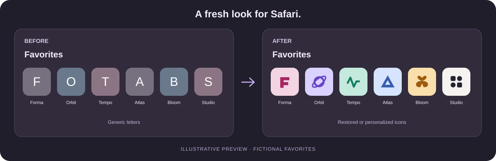

✧
Fix Safari Favorites icons
Repair missing or inactive cached icons. Keep the graphics you like and refresh the ones Safari isn't showing.
Missing icons? A start page that doesn't feel like yours? Bring your Safari Favorites back to life.
Apple Silicon · macOS 13+ · Free
Amethyst 0.6.0 concept · fictional Favorites
FROM BROKEN TO BEAUTIFUL
From letters and missing favicons to a clean, personal start page.

Repair missing or inactive cached icons. Keep the graphics you like and refresh the ones Safari isn't showing.
Find images, import your own graphics, choose clean backgrounds and adjust logo margins. Apply a color style to selected sites.
Compare the before and after appearance in a simulated Safari start page. Review staged changes before writing to Safari.
Restore earlier icons from local backups. Revert custom icons to Safari's default. Your bookmarks stay unchanged.
AT HOME ON YOUR MAC
Automatically follows a supported system language. Switch whenever you prefer.
THREE SIMPLE STEPS
Open the DMG and drag Safari Icon Fixer into Applications.
Open the app and grant Full Disk Access if requested. Your Favorites and icon cache are stored locally.
Choose the icons, quit Safari and apply your changes. Reopen Safari to check the result.
GOOD TO KNOW
Safari may not have downloaded the image, or it may have a cached icon that isn't active or displayed. Safari Icon Fixer works with the local Favorites icon cache, not the bookmarks themselves.
Yes. Choose a site, use its existing image, import a file or search the web. Change the background, logo margin and display style, then apply after quitting Safari.
No. The app reads Favorites to identify sites and changes their supported icon cache entries. It creates local backups before writing. Sites that share a domain may also share their icon.
The app focuses on Favorites tiles on Safari's start page, not browser tabs. Safari's cache format is undocumented, and future Safari versions may require compatibility updates.
Since version 0.5.0, Sparkle verifies signed update downloads. You can opt in to automatic installation. macOS may still require first-launch approval or renewed permissions.
There is no subscription, account requirement or telemetry in the app. Icons, bookmarks, drafts and backups remain local. Searches, image downloads and update checks make the network requests needed to provide those features.
Free · Apple Silicon · Signed Sparkle updates